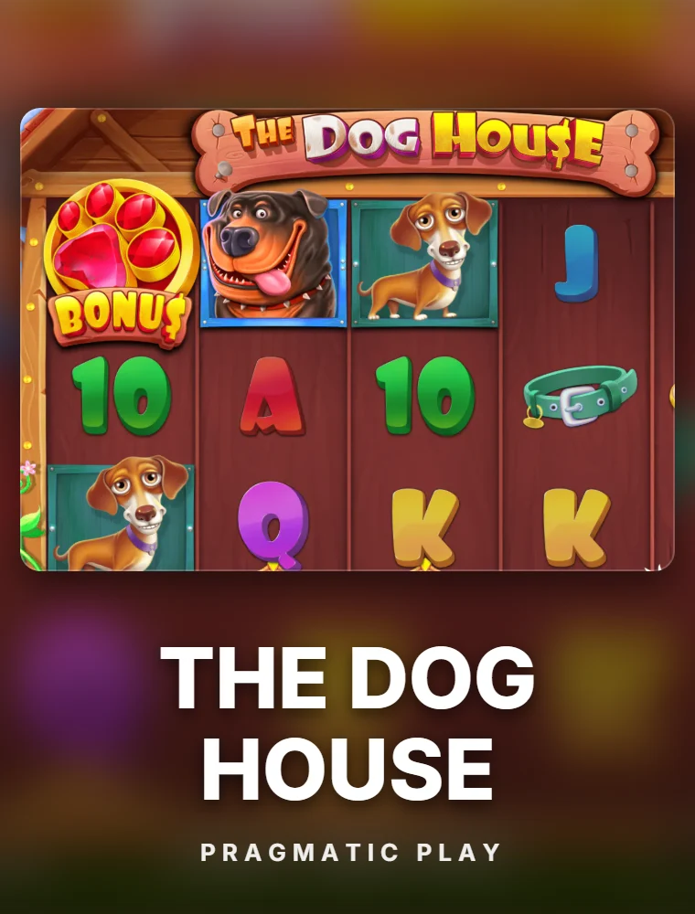
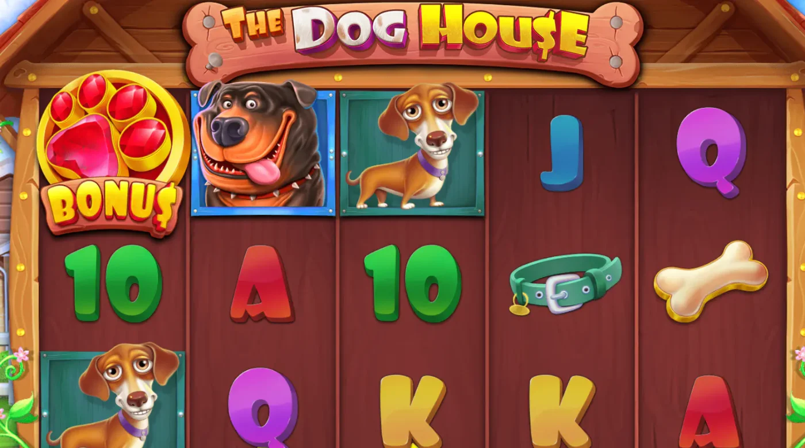

Sticky Wilds ×2 / ×3
Wild-символ «будка» заменяет любые символы и множит выигрыш. Во фриспинах Wilds приклеиваются и остаются до конца бонуса.

Pragmatic Play · Собачий слот-хит
The Dog House (Дог Хаус, в народе — «собаки по 500») — культовый слот от Pragmatic Play на поле 5×3 с 20 линиями. RTP 96.51%, высокая волатильность, максимальный выигрыш ×6750, липкие Wilds-множители ×2 и ×3 в бонусных фриспинах. Ниже — обзор дог хаус, демо-версия и где играть в рублях, плюс различия с версиями The Dog House Megaways и The Dog House 1000.
The Dog House — тёплый «собачий» слот от Pragmatic Play на поле 5×3 с 20 линиями выплат. По сюжету игра переносит на солнечную улицу с деревянной будкой и приветливыми щенками — символы образуют классические комбинации слева направо, а весь драйв держится на липких Wilds с множителями.
Главная механика — Sticky Wilds-множители: во фриспинах любые появившиеся Wilds приклеиваются на всё время бонуса и множат выплаты на ×2 или ×3. Если на одном спине встречаются несколько Wilds — множители перемножаются: ×2 × ×3 = ×6, ×3 × ×3 = ×9 и так вплоть до максимума ×6750. Из-за этой механики «дог хаус» ищут вместе со словами «занос», «фриспины» и «в рублях» — слот отлично работает и в дог хаус демо, и в игре на деньги.
У слота много имён: в поиске пишут «зе дог хаус», «дог хаус слот», «the dogs house», а стримеры прозвали его «собаки по 500» — за привычку крутить «собак» ставкой по 500 рублей. Всё это одна и та же игра — The Dog House от Pragmatic Play.

Выигрыши в The Dog House собираются классически — от 3 одинаковых символов подряд по линии, слева направо. Чем крупнее собака и длиннее цепочка — тем больше выплата. Отдельно работают Wilds-множители и scatter.
Точные коэффициенты выплат зависят от ставки и показаны в таблице выплат прямо в игре The Dog House.
Запустить The Dog House на реальные деньги можно за три шага — от регистрации до первого фриспина.
Заведите аккаунт в казино с играми Pragmatic Play — по номеру, e-mail или через соцсеть.
Внесите депозит удобным способом (карта, СБП, e-wallet) и активируйте приветственный бонус.
Найдите The Dog House в каталоге через поиск и играйте в дог хаус на реальные деньги.
Демо-режим на виртуальные монеты открывается прямо на этой странице — без регистрации и депозита. Подходит, чтобы прощупать частоту scatter, посмотреть, как липнут Wilds во фриспинах, и подобрать ставку.
Игра на деньги идёт в рублёвой валюте счёта: ставка от 20 ₽, пополнение картой или через СБП, вывод в рублях. Те же 20 линий, те же множители ×2/×3 — только выигрыши уже реальные.
Играть в рубляхWild-символ «будка» заменяет любые символы и множит выигрыш. Во фриспинах Wilds приклеиваются и остаются до конца бонуса.
Если во фриспинах два Wild с ×3 сработают на одном спине — итоговый множитель будет ×9. Максимум разгоняет до ×6750.
3+ scatter «косточки» запускают 10 фриспинов. За 3 scatter в бонусе — плюс 10 фриспинов сверху.
The Dog House работает в браузере Android и iOS без установки приложений — и в дог хаус демо, и на деньги.
Помимо оригинала Pragmatic Play выпустил целую серию продолжений. Официального названия «The Dog House 2» нет — так игроки называют сиквелы: чаще всего дог хаус мегавейс, реже Multihold и The Big Dog House. Ниже — чем они отличаются и какую версию выбрать.
Оригинал: поле 5×3, 20 линий, RTP 96.51%, Sticky Wilds-множители ×2/×3, максимум ×6750.
Движок Megaways: переменное количество символов, до 117 649 линий, каскады, Wilds-множители и покупка бонуса.
Усиленная версия: потолок выигрыша до ×1000 в одном спине, увеличенные множители Wilds и Buy Feature.
То, что ищут как «the dog house 2»: Multihold с тремя независимыми наборами барабанов и The Big Dog House с гигантскими символами 2×2 и 3×3. Та же щенячья механика и Wilds-множители в новой обёртке.
Запустите The Dog House demo — демо-версию на виртуальные монеты — прямо здесь, без депозита и регистрации. Демо открывается в окне поверх страницы: его можно свернуть, почитать обзор и вернуться — демо-баланс и выбранная ставка сохраняются. Доступны все 20 линий, липкие Wilds-множители и фриспины. Выигрыши в демо не выводятся.
Ищут также как «the dogs house демо», «зе дог хаус демо» и «дог хаус 1000 демо» — версию 1000 провайдер в демо не выдаёт, попробовать её можно в казино по кнопке «Играть в рублях».
«Собаки по 500» уже седьмой год держатся в топах стримов и чатов. Если свести дог хаус отзывы к сути, игроки чаще всего отмечают четыре вещи:
Из минусов в отзывах стабильно упоминают отсутствие покупки бонуса в классике — за Buy Feature идут в дог хаус мегавейс или 1000.
Базовый RTP — 96.51%, волатильность высокая. У Pragmatic Play есть настраиваемые версии отдачи, поэтому в разных казино показатель может отличаться — сверяйтесь с описанием слота в конкретном клубе.
The Dog House demo (дог хаус демо) запускается на виртуальные монеты без депозита и регистрации — кнопка «Играть демо». Механика полностью совпадает с игрой на деньги, но выигрыши не выводятся.
Зарегистрируйтесь в казино со слотами Pragmatic Play, пополните счёт удобным способом и запустите The Dog House в реальном режиме. Ставки от 20 ₽, вывод — в рублях. Ссылки на игру — в кнопках «Играть на деньги».
Wild-символ «собачья будка» заменяет любые символы и множит выигрыш на ×2 или ×3. Во фриспинах Wilds приклеиваются к своим позициям и остаются до конца бонуса. Если на одном спине сработают несколько Wilds — множители перемножаются.
Максимум — ×6750 от ставки. Крупные заносы приходят в Free Spins за счёт стакающихся Sticky Wilds-множителей ×2 и ×3.
Оригинал — 5×3, 20 линий, ×6750. The Dog House Megaways — движок Megaways с переменным количеством линий до 117 649 и покупкой бонуса. The Dog House 1000 — потолок ×1000 в одном спине и усиленные множители.
В классической версии The Dog House покупки бонуса нет — фриспины запускаются только тремя scatter «косточки». В версиях Megaways и 1000 Buy Feature присутствует и стоит около ×100 ставки.
Народное название The Dog House. Так слот прозвали стримеры — за привычку крутить «собак» ставкой по 500 рублей за спин. Если видите «собаки по 500» в чате или на стриме, речь именно про дог хаус от Pragmatic Play.
Официально слота с названием The Dog House 2 нет. Обычно так называют продолжения серии: The Dog House Megaways (дог хаус мегавейс), Multihold и The Big Dog House. Все они сохраняют механику липких Wilds-множителей.
Да, The Dog House адаптирован под Android и iOS и запускается прямо в браузере телефона без установки приложений — и в дог хаус демо, и в игре на реальные деньги.
Откройте слот в казино — там есть и демо-режим, и игра в рублях.
Открыть The Dog HouseФриспины начисляются после регистрации — активация за минуту, отыгрыш и вывод в рублях. Количество бонусов ограничено.
Забрать фриспины